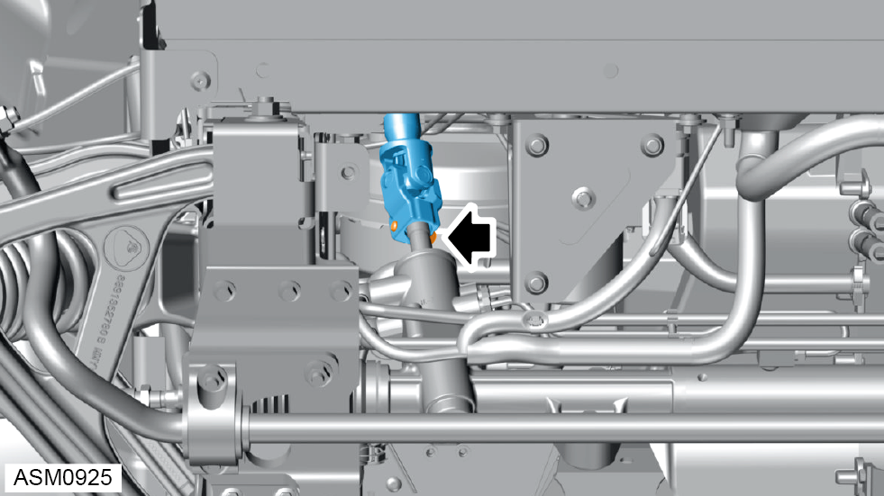
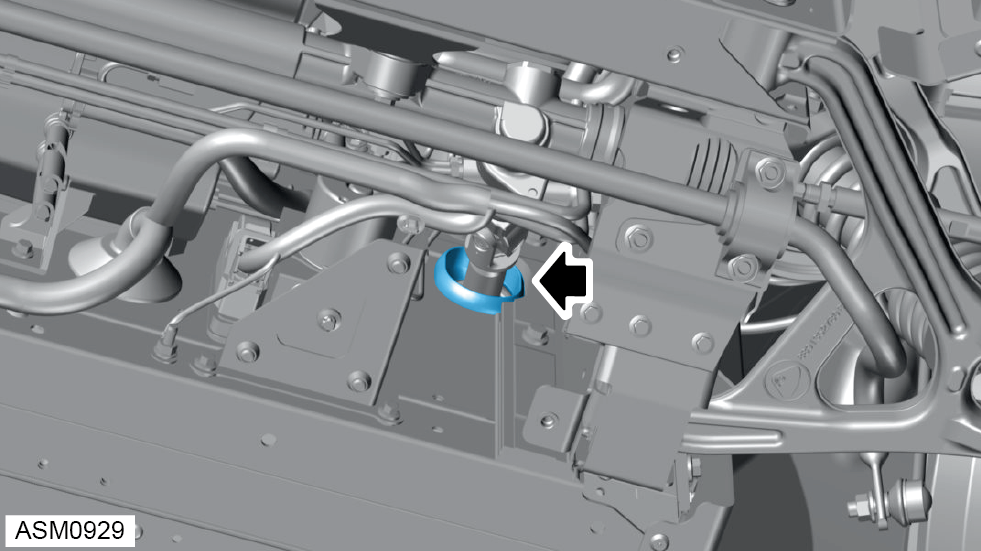
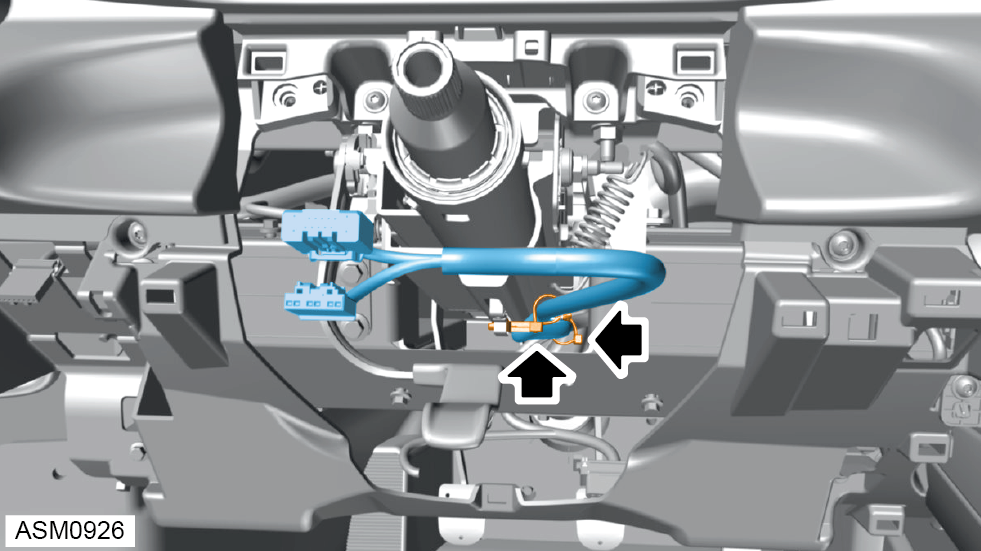
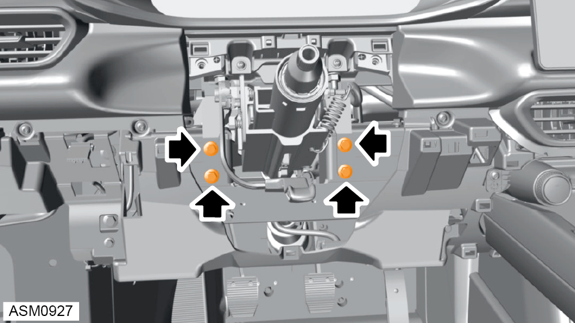
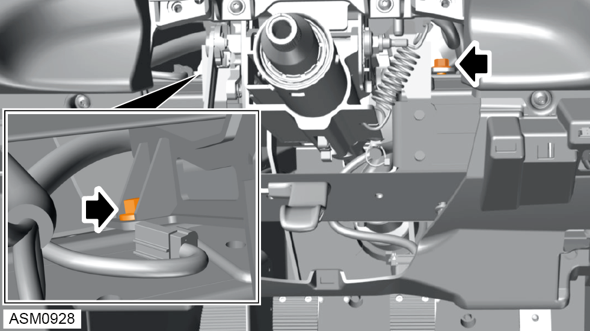
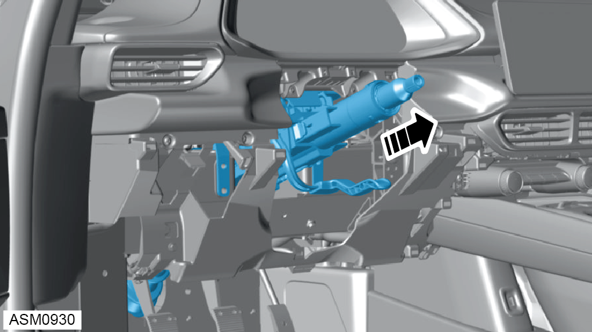
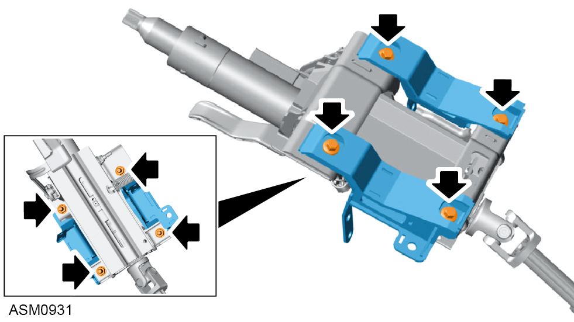
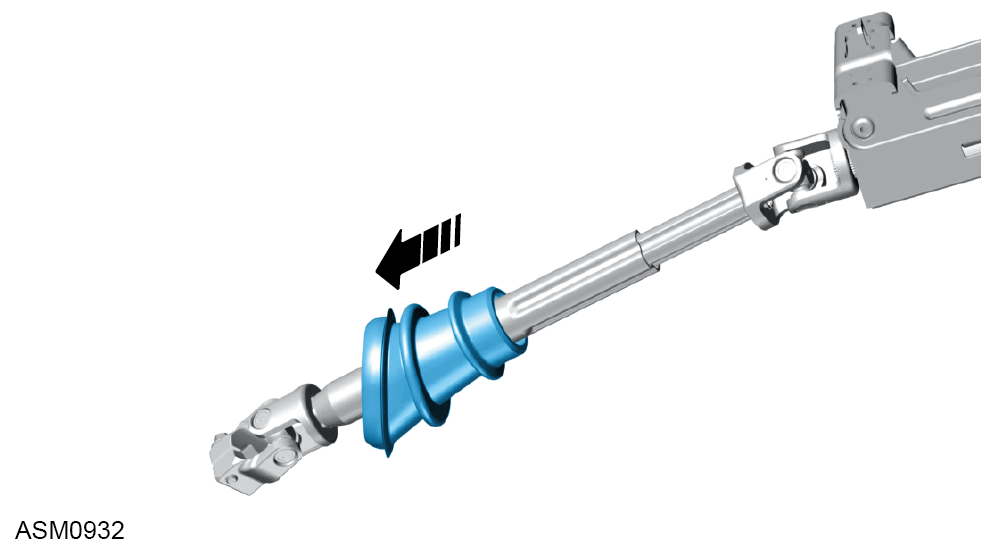

Upper Steering Column Assembly
Print
Operation Code: 32.05.19-02
Removal
- Remove front undertray. Refer to procedure.

- Remove M8x30 bolt securing upper steering column to steering rack. Torque 24 Nm.

- Push steering column gaiter through firewall.
- Disengage steering column from steering rack.
- Remove steering wheel. Refer to procedure.
- Remove drivers stalk module. Refer to procedure.
- Remove lower fascia panel. Refer to procedure.

- Disengage fir tree clips (x2) securing harness to steering column.

- Remove M8x25 bolts (x4) securing steering column to cross car beam. Torque 24 Nm.

- Remove M8x25 bolts (x2) securing steering column to cross car beam. Torque 24 Nm.

- Remove steering column assembly.
Do not carry out further disassembly if removing for access only.

- Remove M8x25 bolts (x4) and M8 nuts (x4) securing steering column mounts to steering column assembly. Torque 24 Nm.
- Remove steering column mounts.

- Remove steering column gaiter.
Installation
- Installation is the reverse of removal procedure.